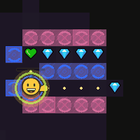
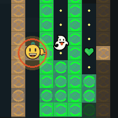

Dash and phase define the game
Dash is the burst that breaks open a bad lane. Phase cuts through most walls and turns dead ends into exits. Those two moves are the center of the run, and the floor keeps changing how valuable they are.
- Dash for escapes, route commits, and PvP damage
- Phase to break lines, improvise routes, and survive traps
- Upgrades push cooldowns, duration, invulnerability, and mobility

